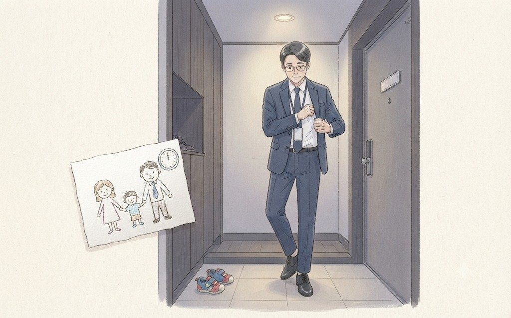
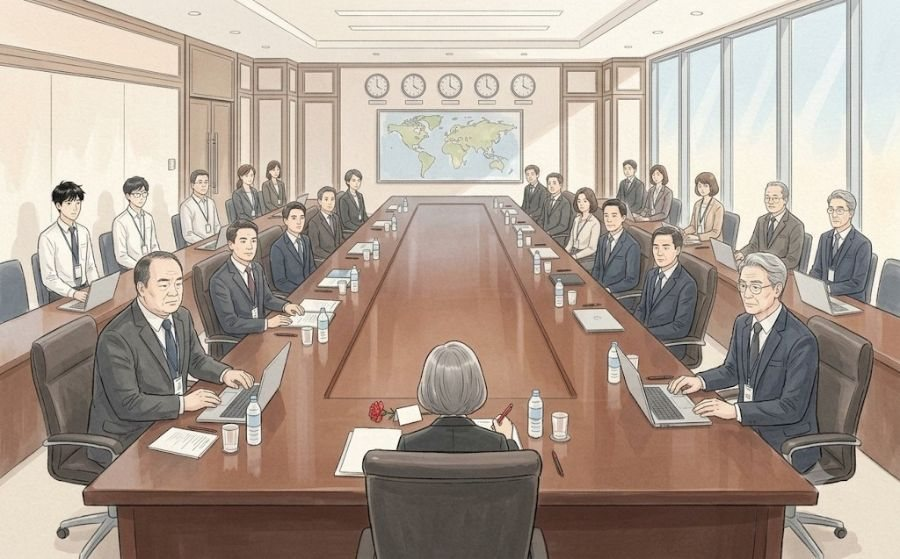
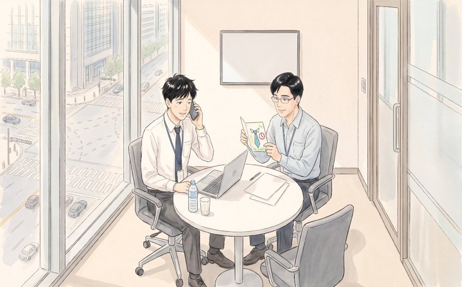

2021년 5월 8일 토요일, 오전 4시 50분.
전남 보성. 녹차밭이 내려다보이는 마을의 단층집. 김옥순은 이 시간이면 눈을 떴다. 예순두 살. 서른 해 동안 차밭에서 일한 몸은 해가 뜨기 전에 먼저 일어났다.
부엌 달력에 빨간 동그라미가 있었다. 5월 8일. 그 옆에 작은 글씨로 '우진 전화'라고 적혀 있었다. 아들이 대학 때문에 집을 떠난 뒤 18년 동안, 어버이날 아침이면 늘 7시 전에 전화가 왔다. 아들은 출근 전에 전화를 걸었다.
김옥순은 휴대폰을 식탁 위에 올려놓고 기다렸다.
같은 시각. 서울 은평구 원룸.
이우진은 셔츠 단추를 채우다가 손을 멈췄다. 휴대폰 화면에 알림이 떠 있었다. '어버이날'. 5시. 엄마는 이미 일어났을 시간이었다.
그는 통화 버튼 위에서 망설였다. 5시 반까지 29층에 가야 했다. 지금 전화하면 엄마는 반가워서 30분을 이야기할 것이었다. 그리고 마지막에 꼭 물을 것이었다. 채원이는 잘 있냐고. 언제 데려올 거냐고.
이우진은 휴대폰을 주머니에 넣었다. 회의 끝나고 하자. 8시 반쯤. 엄마는 그때도 기다리고 있을 것이었다.
오전 5시 20분. 경기도 고양시 아파트.
한지석은 현관에서 구두를 신다가 뒤를 돌아봤다. 거실 테이블 위에 도윤이 그린 카드가 놓여 있었다. 어제 저녁 아들이 학교에서 만들어 온 것. 크레파스로 그린 세 사람. 엄마, 도윤, 그리고 아빠. 아빠는 넥타이를 매고 있었고, 얼굴 옆에 시계가 그려져 있었다.
카드 안쪽에는 삐뚤삐뚤한 글씨가 있었다.
'아빠 토요일에도 회사 가서 힘들지. 사랑해요. 어버이날 축하해요.'
한지석은 카드를 집어 정장 안주머니에 넣었다. 아들이 깨기 전에 나가는 건 이번이 일곱 번째 토요일이었다.

오전 5시 30분. 서울 성북구 아파트.
최윤아는 냉장고에 메모를 붙였다.
'어머님, 서아 아침은 냉장고 두 번째 칸 주먹밥이에요. 9시에 어린이 뮤지컬 예약해 놨어요. 대학로. 표는 식탁 위에. 저 11시까지 갈게요.'
시어머니 정순자는 5월 한 달 동안 서울에 올라와 있었다. 남편 최정훈의 세종 현장이 바빠진 뒤로. 최윤아는 어버이날에 시어머니에게 아이를 맡기고 출근하는 며느리였다. 그 사실이 메모를 쓰는 손을 무겁게 했다.
메모 맨 아래에 그녀는 한 줄을 더 썼다.
'어머님, 어버이날 감사해요. 저녁에 맛있는 거 사 올게요.'
오전 5시 40분. 청연타워 29층.
이우진이 대회의실 불을 켰을 때, 테이블 위에는 이미 생수병이 놓여 있었다. 열여섯 병. 라벨 방향까지 맞춰져 있었다. 양은주 과장이 먼저 다녀간 것이었다.
생수병 사이에 카네이션 한 송이가 놓여 있었다. 회의실 맨 앞, 문혜경의 자리였다.
이우진은 카네이션을 들어 올렸다. 작은 카드가 꽂혀 있었다. 글씨는 없었다. 그냥 빈 카드였다.
그는 카네이션을 원래 자리에 내려놓았다. 누가 놓았는지 알 것 같았다. 그리고 그 사람이 왜 카드를 비워 두었는지도.
오전 6시 15분. 한지석, 백승원, 최윤아가 차례로 들어왔다. 나서현은 6시 20분에 헐레벌떡 뛰어 들어왔다.
"죄송해요. 엄마가 어버이날이라고 새벽부터 전화하셔서..."
"받았어?"
백승원이 물었다.
"네. 근데 회사 간다니까 엄마가 뭐라는 줄 아세요? '토요일에 무슨 회사야, 너 그 회사 이상한 데 아니야?'"
회의실에 웃음이 번졌다. 이우진만 웃지 못했다. 주머니 속 휴대폰이 무거웠다.
오전 7시. 문혜경이 들어왔다.
그녀는 자리에 앉다가 카네이션을 봤다. 잠깐 멈췄다. 회의실의 모든 사람이 그 짧은 정지를 봤다. 문혜경은 카네이션을 집어 테이블 옆으로 조심스럽게 옮겼다. 그리고 출력본을 펼쳤다.

"시작하죠."
카네이션에 대해서는 아무도 아무 말도 하지 않았다.
오전 7시 10분부터 40분까지. 보고는 순조로웠다.
노승환 부장의 IT플랫폼그룹이 3주 만에 새 상세페이지 템플릿을 브랜드몰 주요 상품 서른 개에 적용했다. 최윤아가 쿠폰 효과를 뺀 전환율을 보고했다. 평균 1.3배. 진만석 상무와 함께 쓴 신흥 시장 착수 보고에서는 멕시코 편의점 현금 결제 연동 일정이 처음으로 확정되었다.
문혜경은 빨간 볼펜을 두 번 들었다. 두 번 다 질문이었다. 질책은 없었다.
7시 45분. 마지막 안건이 끝났을 때, 문혜경이 출력본을 덮었다.
"오늘은 여기까지 하죠."
회의실이 술렁였다. 7시 45분. 지금까지 가장 이른 종료였다.
"어버이날이잖아요. 다들 부모님께 전화 한 통씩 하세요. 회의 때문에 못 했다는 사람, 여기 꽤 있을 것 같은데."
그녀는 일어나서 문으로 걸어갔다. 그리고 문 앞에서 잠깐 멈췄다. 테이블 옆에 옮겨 둔 카네이션을 돌아봤다. 다시 걸어와 그것을 집어 들었다.
"이건 가져갈게요."
문혜경이 나갔다. 회의실에 남은 열다섯 명은 한동안 아무 말도 하지 않았다.
오전 7시 50분. 29층 끝 소회의실.
29층 복도 끝, 창가의 작은 회의실은 네 명이 앉으면 꽉 찼다. 예약하는 사람이 없어서, 이 층 사람들은 급한 전화를 하거나 잠깐 혼자 있고 싶을 때 이 방에 들어왔다.
이우진은 창가 의자에 앉아 통화 버튼을 눌렀다. 신호가 한 번도 다 가기 전에 엄마가 받았다.
"우진아!"
"엄마. 어버이날 축하해요. 늦어서 미안해."
"뭐가 늦어. 아직 8시도 안 됐는데. 출근했어?"
"응. 토요일인데 회의가 있어서. 방금 끝났어."
"토요일에? 아이고, 우리 아들 고생하네."
엄마 목소리 뒤로 새소리가 들렸다. 보성의 아침이었다. 이우진은 그 소리가 그리웠다.
"엄마. 아까 5시에 전화하려다가 못 했어. 미안해."
"5시에 했으면 엄마가 깜짝 놀랐지. 무슨 일 있는 줄 알고."
김옥순은 웃었다. 그리고 역시 그 질문을 했다.
"채원이는 잘 있고?"
이우진은 잠깐 말이 막혔다. 한 달 전 「여름밤」에서의 저녁이 떠올랐다. 반지 상자를 닫던 손. 생각해 볼게.
"응. 잘 있어."
"언제 한번 데려와. 엄마가 녹차 새로 덖었어. 첫물차야."
"응. 조만간."
통화를 끊고 이우진은 한참 창밖을 보며 앉아 있었다. 문이 조용히 열렸다. 한지석이었다. 그도 휴대폰을 들고 있었다.
"어머님이랑 통화했어?"
"네. 파트장님은요?"
"장인어른이랑. 우리 부모님은 두 분 다 안 계셔."
한지석은 옆 의자를 끌어와 앉았다. 그리고 안주머니에서 도윤의 카드를 꺼내 이우진에게 보여 줬다. 크레파스로 그린 넥타이와 시계.

"우리 아들 눈에는 내가 시계로 보이나 봐."
"시계요?"
"늘 시간 없는 사람."
이우진은 카드를 돌려줬다. 두 사람은 한동안 말없이 앉아 있었다.
"우진아. 채원 씨랑은 어떻게 됐어?"
한지석이 처음으로 그 이야기를 물었다. 이우진은 대답하는 데 시간이 걸렸다.
"생각해 본대요. 반지는 가지고 있고요."
"그거 좋은 신호야. 안 받은 게 아니잖아."
"파트장님은 형수님한테 어떻게 청혼하셨어요?"
한지석은 웃었다.
"나는 청혼 안 했어. 수진이가 했어. 내가 하도 미적거리니까. '너 이러다 평생 연구 노트만 쓸 거지?'라고."
작은 회의실에 두 사람의 웃음소리가 울렸다.
같은 시각, 28층 대표실 앞.
차미정 비서는 문혜경이 카네이션을 들고 엘리베이터에 타는 것을 봤다. 그리고 양은주 과장에게 메시지를 보냈다.
답은 금방 왔다.
차미정은 묻지 않았다. 사장실과 대표실의 비서들 사이에는, 서로 묻지 않는 것도 원칙이었다.
(EP24 끝)